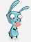

La más hermosa <3 :

Esta es una página hecha para decirte que Te Amo, y recordar algunos de los Buenos Momentos
Durante este año y 9 meses pasamos por mutitud de situaciones en las que aprendimos sobre nosotros y sobre la vida. Vivimos momentos de risa, de llanto, de confianza, de enojo, de amor puro. Conocimos mucho lo que es compartir lo que uno tiene con el otro y a cambio recibía lo que es invaluable para darle un sentido a la vida. Aún hay muchas cosas que no sé del mundo, pero algo de lo que estoy seguro es de lo que soy y siento. Y siento que quiero compartir el resto de mi vida con vos, mi amor.
Para este San Valentín quise hacerte un regalito bien nerd, ya que vengo con toda esta movida, y recopilé fotos que tenía en mi celu de experiencias que vivimos juntos y las ordené en una galería para que tengamos un álbum digital aparte del físico. También como estaba linda la página aproveché para agregar los escritos que te hice durante todo este año pasado para que los tengas cerquita. ¡Y como siempre te digo, sigamos recolectando memorias juntos!
Datos random:
 En Japón, las mujeres regalan los chocolates al hombre y un mes después los hombres deben responder a esta declaración con flores. Re dramáticos y machistas estos japos, como siempre(?.)
En Japón, las mujeres regalan los chocolates al hombre y un mes después los hombres deben responder a esta declaración con flores. Re dramáticos y machistas estos japos, como siempre(?.) Es tremendo esto. En China, la cantidad de rosas tiene un significado particular: una rosa significa “eres la única”; once, “eres mi preferida»; 99 es una promesa de “amor para siempre” y 108, es una “petición de matrimonio”. Sin palabras.
Es tremendo esto. En China, la cantidad de rosas tiene un significado particular: una rosa significa “eres la única”; once, “eres mi preferida»; 99 es una promesa de “amor para siempre” y 108, es una “petición de matrimonio”. Sin palabras.- Y no podía faltar este, nuestra marca favorita. Las cajas de bombones o chocolates en forma de corazón fueron introducidas por Richard Cadbury en 1861.
La más hermosa <3 :